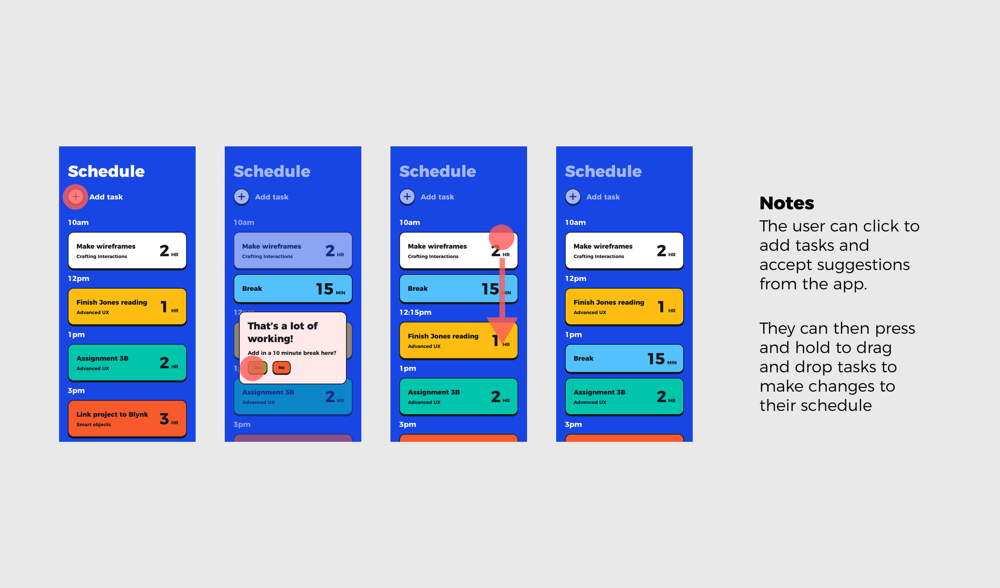
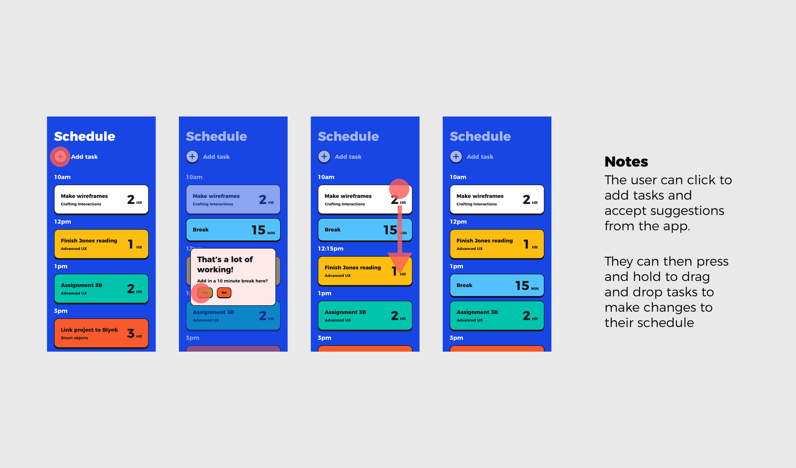

2022
UI/UX Design, Brand Identity
UI/UX Designer
Leah How
Focus is a mobile application that allows users to be more productive and organized by providing them with ways to organize notes and streamline task creation. The app also tracks user work behavior to then provide recommendations on the user's planned work schedule.
People with ADHD can have difficulty with focus, prioritization, controlling impulses, attention, and organization. For students, this often has an impact on their work habits and ability to complete all their assignments thoroughly or on time.
April Chien - Interaction flow, UI/UX design for task list, and work mode
Leah How - Process organization, UI/UX design for home, and notes
Initial research focused on better understanding user’s needs related to productivity and work schedules, including looking into their existing process for different situations.
We settled on the challenge of how we could help students with ADHD be productive and stay on track.
How do users currently manage their work
What productivity and focus products currently exist for this user group
What are users' current pain points in this area
Which features are essential to manage one's work process
We conducted interviews with users to further identify pain points, frustrations, needs, and desires with existing products to determine how our product could improve the existing work experience.
Users find motivation in finishing their assignments and submitting them on time
Users find it difficult to sit still and not be distracted by invasive thoughts
Users have a hard time prioritizing assignments and often forget to submit them on time
Users often make mistakes on assignment due to short attention span
Users have the desire to be able to pay attention to tasks without getting distracted
For our target user group we looked into students with ADHD that struggle with focus, productivity, and prioritization.
We also created a user journey for our primary persona, going through the process of him trying to finish his assignments.
To kick-off the design process, we started with thinking through our app flow and then sketching out initial screen designs. We then created a low fidelity prototype.
Rough sketches were done to get our initial thoughts on paper and brainstorm new ideas for specific UI elements.


The primary user flow is the process of adding notes, creating and organizing tasks, and collecting user behavior data to help with task prioritization.
Low-fidelity prototypes were created for user testing
 

User testing was conducted to determine where improvements could be made and identify new ideas to satisfy user expectations, needs, and desires.
Users liked having recommendations on their schedule building but also wanted more clarity around how that process worked.
Certain colors and layouts could make users feel overwhelmed and unsure about how to proceed, causing them to not want to use the application.
Some labels were confusing and could be more clear to help guide users through the application
Users appreciate having things highlighted or called out because it helps with breaking down information and making it feel less overwhelming
Users liked having certain menial tasks streamlined or automated so they didn't need to do them manually
Based on our user feedback we then made revised our designs and made high-fidelity prototypes.
On the dashboard, users can view different work tools and switch between dates on the task calendar.
When clicking into the task list they see an expanded view, and also have the option to add a new task
In notes, users can generate to do's and tasks through scanning the contents of their class notes.
They also have tools to highlight and bold important parts of the notes.
When users add a new task they can drag and drop it into their task list schedule.
They will also receive suggestions on how to best arrange their schedule.
In work mode users have a timer that shows them how long they've been working
This mode also tracks user data to analyze work habits and use the data to better inform users' work plans and schedules in the future.